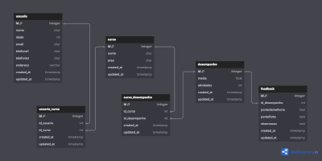

Projetos
-
Scratch - Carta do Amanhã:
Carta do amanhã foi um projeto feito no scratch em squad onde desenvolvemos uma pequena animação para definirmos metas e objetivos pessoais, onde a personagem principal apresenta 1 meta e 1 objetivo para si e ao longo da animação outros personagens vão tendo dialogo com a personagem e apresentando suas metas e seus objetivos, cada meta e objetivo foi definida por cada integrante do nosso squad, eu cuidei da parte de código, implementação e animação dos personagens, do cenário e a criação da meta e objetivo do 3 dialogo.

Link do projeto: http://scratch.mit.edu/projects/1051172818
-
Quiz Desenhos Animados:
Quiz Desenhos Animados foi um projeto em squad onde fizemos um quiz com tema desenhos antigos do SBT e TV Globinho, cuidei do JS nesse projeto implementei junto de um colega o verificador de respostas, onde resposta correta acumulava pontos e resposta errada reinicia o quiz, também atuei na implementação da tela de vitória tudo manipulando o DOM pelo js e também a tela de game over.

Link do projeto: https://desenhos1-github-io.vercel.app/
-
Cadastrando:
Cadastrando foi um projeto solo sobre fazer um cadastro de qualquer dado, exibir na tela para o usuário, atualizar e deletar, foi feito usando POO e DOM.

Link do projeto: https://alissonn17.github.io/miniProjetofinal-M2.github.io/
-
Hackathon
Hackathon foi um projeto em squad com tema sobre "A importância da história afro-brasileira e como nos afeta", onde cuidei do JS e pela primeira vez fiz um MVC com o objetivo de retornar uma confirmação do cadastro no hackthon para o usuário. Fiz também um POO novamente para cada usuário que se increva no hacathon e a parte do login onde o user fazia o login e acessava seu perfil.

Link do projeto: https://emilyssouza.github.io/Hackathon/
-
Sistema de Curso
Neste sistema foi um projeto solo em que desenvolvi um diagrama conceitual e lógico sobre um sistema de autoria propria para resolver um problema definido.
 Link do projeto: Publicação sobre o sistema no linkedIn
-
Armário Auto
Armário Auto foi desenvolvido em squad onde desenvolvemos uma solução nova e única para um problema existente escolhido pelo squad, minha função pela primeira vez foi ser líder, um baita desafio que deu um baita resultado.
Link linkedIn: Publicação sobre o Armário Auto linkedIn
Link do github: https://github.com/alissonn17/armarioAuto -
API - Meio Ambiente
API - Meio Ambiente desenvolvido solo onde desenvolvi uma API que deveria ter no mínimo 3 rotas GET e desenvolver uma soluçõ para um problema da sociedade, então apresentei cidades e paises e seus habitantes, tecnologias ou formas de salvar o planeta, foi utilizado NODEJS e o EXPRESS.
Link linkedIn: Publicação sobre a API - Meio Ambiente linkedIn
Link do github: https://github.com/alissonn17/apiMeioambiente